Memeology
Memeology course
Taught by Jon Barkei
Hello and welcome to the Memeology Course. If and when you complete this short course you will be be gifted a cirtificate of a PhD in Memeology so that you can brag to all your friends. Have fun and learn on!
Chapter 1 - Learning your memes
Memes have been around for a while. Memes are simply a photo awith test on the top, bottom, or on the the photo. Memes should be funny but not over used.
I cant express that enough. Dont be that person. Only use a meme IF you know which meme to use, dont scroll though every website trying to find the best meme. You should know most memes so that you have an understanding of how they can be used. Below are some of the most notable meme templates. Templates is the photo in which a meme is made out of. Text Is put on the top to make a meme. Templates can be .gifs or just photos.
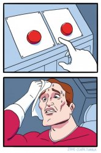
 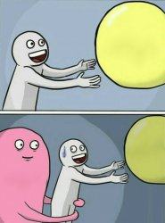
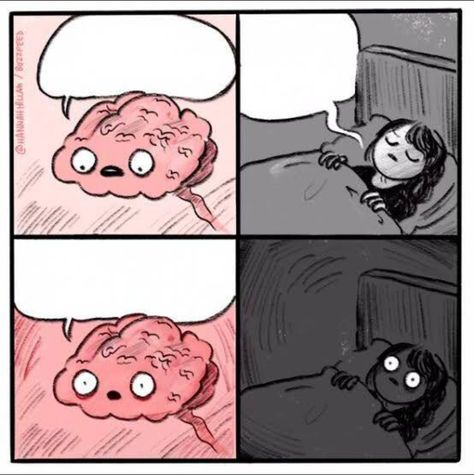
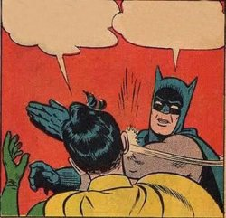
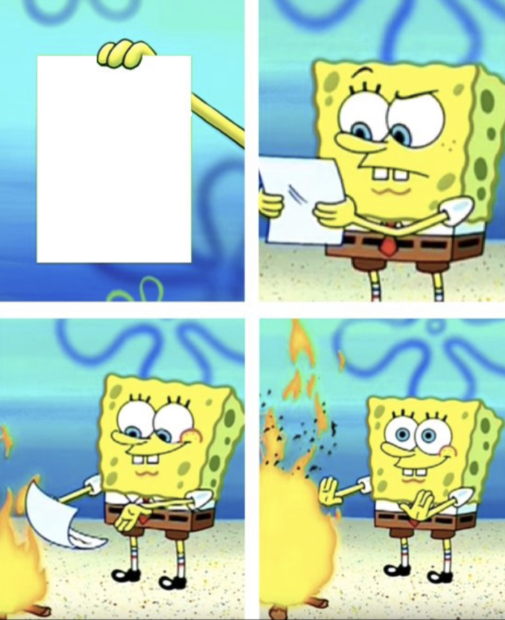
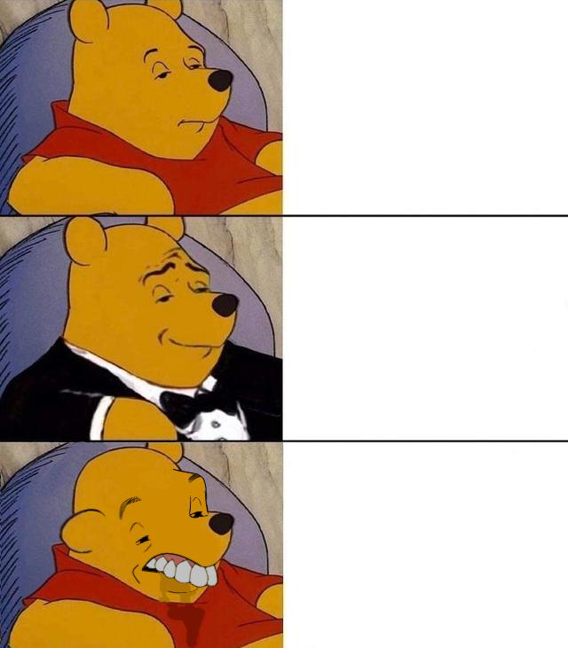
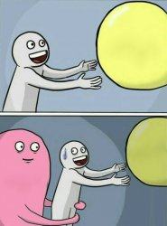
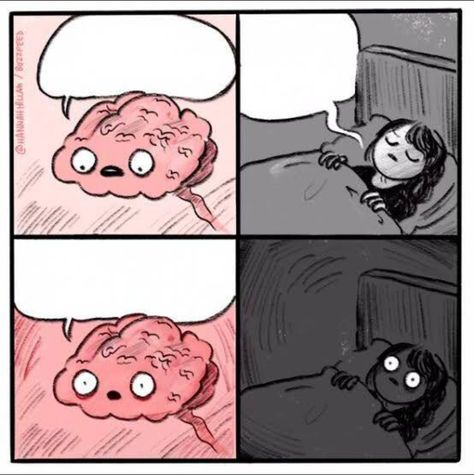
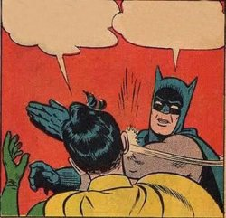
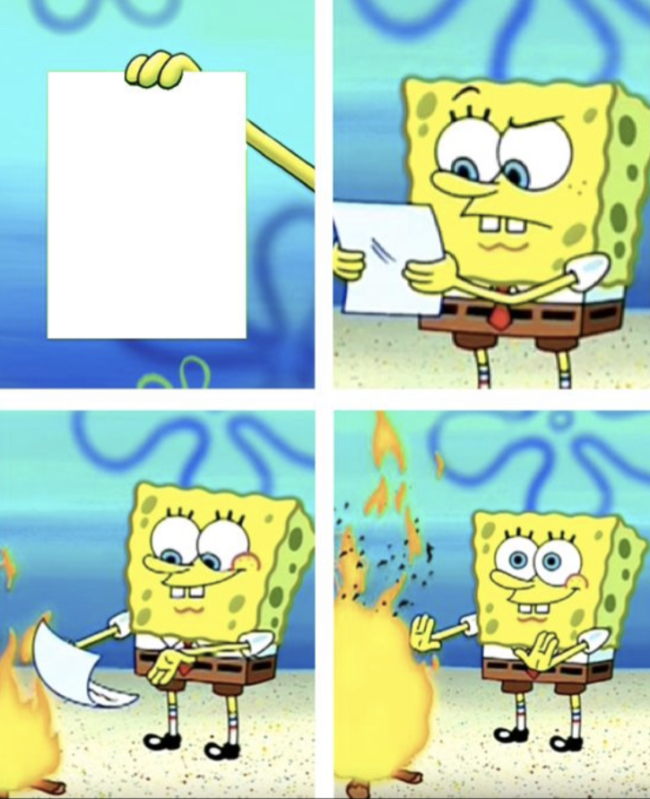
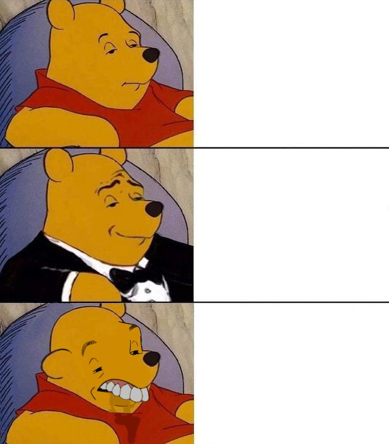
.jpeg)
Chapter 2 - Finding memes
Memes websites are everywhere. So to give you a push, I have given you some links to the most notable memes websites. Please do give it a check and remember what websites there are. :)
imgflip
Cheezburger
Quick meme
Congrats! You finished... almost. All that is left is to take a short test and then you will get a certificate!
Test